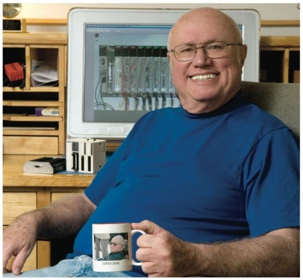

DICK MORLEY

"Father of the Programmable Logic Controller"
(December 1, 1932 – October 17, 2017)
Richard E. Morley, a self-schooled
engineer who dropped out of MIT, designed a rugged computer that revolutionized factory automation.
About:
- Richard E. Morley was an American mechanical engineer who was considered
one of the "fathers" of the programmable logic controller (PLC) since he was involved
with
the production of the first PLC for General
Motors, the Modicon, at Bedford and Associates in 1968. The PLC has been recognized as a
significant
advancement in the practice of automation, and has an important influence on manufacturing industry.
-
An inventor, machinist, author, consultant and engineer, his peers have acknowledged his contributions
with
numerous awards from groups such as the International Society of Automation (ISA), the Instrumentation
Systems and Automation Society, Inc. magazine, the Franklin Institute, the Society of Manufacturing
Engineers (SME) and the Engineering Society of Detroit. He was also inducted into the Manufacturing Hall
of
Fame. SME offers the Richard E. Morley Outstanding Young Manufacturing Engineer Award for outstanding
technical accomplishments in the manufacturing profession by engineers age 35 and under.
-
Morley worked out of his barn in New Hampshire where he and his wife had provided a home to 40 foster
children.
Awards:
- 2016: Control System Integrators Association (CSIA) Lifetime Achievement Award
- 2016: Inducted into the Measurement, Control & Automation Hall of Fame by the Measurement, Control
&
Automation Association (MCAA)
- 2007–2008: SME Manufacturing Enterprise Council Member
- 2006–2008: NH Judge - Hi Tech Council Product of the Year
- 2006: Process Automation Hall of Fame (Control magazine)
- 2005: SME Board of Directors
- 1996: Automation Hall of Fame Prometheus Award
- 1995: SME Fellow
- 1993: Parallel Processor Design — Flavors
- 1991: Howard N. Potts Medal
- 1990: Entrepreneur of the Year
- 1981: Gould Science & Engineering Fellow
- Boeing Technical Excellence Award